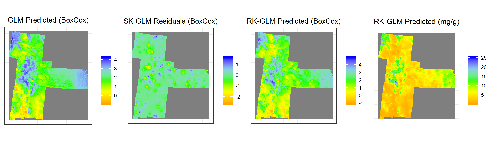
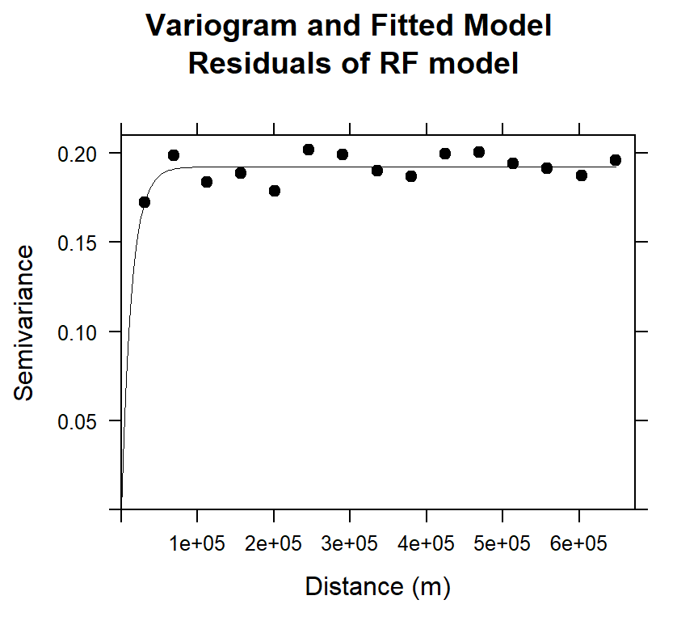
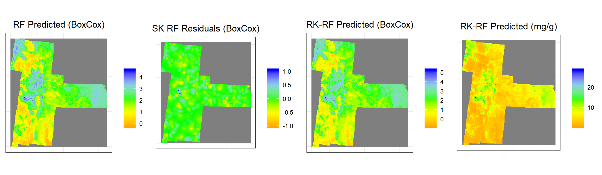
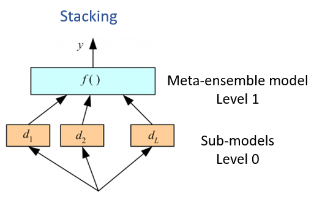
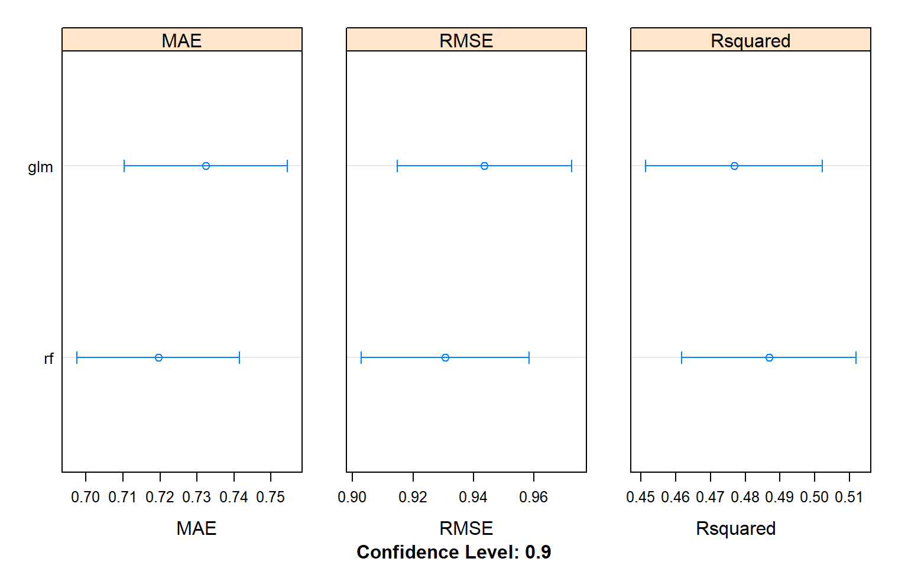
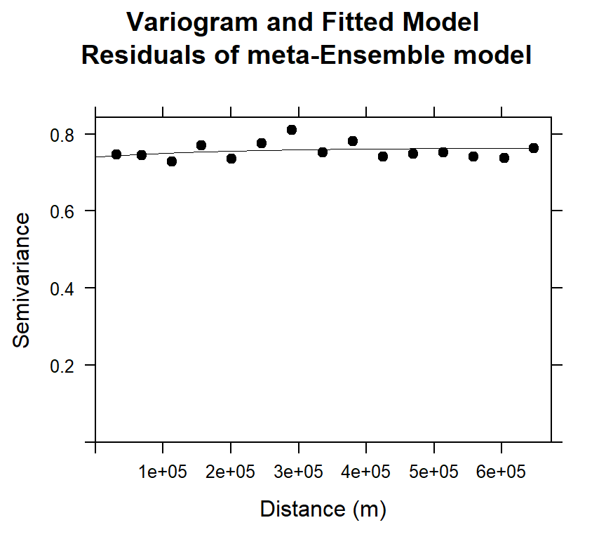
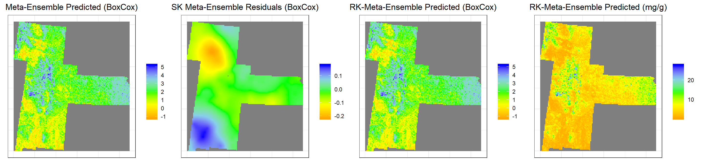

Regression Kriging
Regression kriging (RK) mathematically equivalent to the universal kriging or kriging with external drift, where auxiliary predictors are used directly to solve the kriging weights. Regression kriging combines a regression model with simple kriging of the regression residuals. The experimental variogram of residuals is first computed and modeled, and then simple kriging (SK) is applied to the residuals to give the spatial prediction of the residuals.

In this exerciser we will use following regression model for regression kriging of SOC:
We will use caret package for regression and gstat for geo-statistical modeling.
Load package
library(plyr)
library(dplyr)
library(gstat)
library(raster)
library(ggplot2)
library(car)
library(classInt)
library(RStoolbox)
library(caret)
library(caretEnsemble)
library(doParallel)
library(gridExtra)Load Data
The soil organic carbon data (train and test data set) could be found here.
# Define data folder
dataFolder<-"D:\\Dropbox\\Spatial Data Analysis and Processing in R\\DATA_08\\DATA_08\\"train<-read.csv(paste0(dataFolder,"train_data.csv"), header= TRUE)
state<-shapefile(paste0(dataFolder,"GP_STATE.shp"))
grid<-read.csv(paste0(dataFolder, "GP_prediction_grid_data.csv"), header= TRUE) First, we will create a data.frame with SOC and continuous environmental data.
Power transformation
powerTransform(train$SOC)## Estimated transformation parameter
## train$SOC
## 0.2523339train$SOC.bc<-bcPower(train$SOC, 0.2523339)Create dataframes
# train data
train.xy<-train[,c(1,24,8:9)]
train.df<-train[,c(1,24,11:21)]
# grid data
grid.xy<-grid[,c(1,2:3)]
grid.df<-grid[,c(4:14)]
# define response & predictors
RESPONSE<-train.df$SOC.bc
train.x<-train.df[3:13]Define coordinates
coordinates(train.xy) = ~x+y
coordinates(grid.xy) = ~x+yStart foreach to parallelize for model fitting
mc <- makeCluster(detectCores())
registerDoParallel(mc)Set control parameter
myControl <- trainControl(method="repeatedcv",
number=10,
repeats=5,
allowParallel = TRUE)Generalized Linear Model
The Generalized Linear Model (GLM) is a flexible generalization of ordinary linear regression that allows for response variables that have error distribution models other than a normal distribution.
First will fit the GLM model with a comprehensive environmental co-variate, Then, we will compute and model the variogram of the of residuals of the GLM model and then simple kriging (SK) will be applied to the residuals to estimate the spatial prediction of the residuals (regional trend). Finally, GLM regression predicted results, and the SK kriged residuals will be added to estimate the interpolated soil organic C.
Fit Generalized Linear Model (GLM)
set.seed(1856)
GLM<-train(train.x,
RESPONSE,
method = "glm",
trControl=myControl,
preProc=c('center', 'scale'))
print(GLM)## Generalized Linear Model
##
## 368 samples
## 11 predictor
##
## Pre-processing: centered (11), scaled (11)
## Resampling: Cross-Validated (10 fold, repeated 5 times)
## Summary of sample sizes: 332, 331, 331, 331, 332, 331, ...
## Resampling results:
##
## RMSE Rsquared MAE
## 0.9423772 0.4742412 0.7310591Variogram modeling of GLM residuals
First, we have to extract the residuals of RF model, we will use resid() function to get residuals of RF model
# Extract residuals
train.xy$residuals.glm<-resid(GLM)
# Variogram
v.glm<-variogram(residuals.glm~ 1, data = train.xy,cutoff=300000, width=300000/15)
# Intial parameter set by eye esitmation
m.glm<-vgm(0.15,"Exp",40000,0.05)
# least square fit
m.f.glm<-fit.variogram(v.glm, m.glm)
m.f.glm## model psill range
## 1 Nug 0.1085947 0.00
## 2 Exp 0.7943117 18818.22#### Plot varigram and fitted model:
plot(v.glm, pl=F,
model=m.f.glm,
col="black",
cex=0.9,
lwd=0.5,
lty=1,
pch=19,
main="Variogram and Fitted Model\n Residuals of GLM model",
xlab="Distance (m)",
ylab="Semivariance")
GLM Prediction at grid location
grid.xy$GLM <- predict(GLM, grid.df)Simple Kriging Prediction of GLM residuals at grid location
SK.GLM<-krige(residuals.glm~ 1,
loc=train.xy, # Data frame
newdata=grid.xy, # Prediction location
model = m.f.glm, # fitted varigram model
beta = 0) # residuals from a trend; expected value is 0 ## [using simple kriging]Kriging prediction (SK + Regression Prediction)
grid.xy$SK.GLM<-SK.GLM$var1.pred
# Add RF predicted + SK preedicted residuals
grid.xy$RK.GLM.bc<-(grid.xy$GLM+grid.xy$SK.GLM)Back transformation
We for back transformation we use transformation parameters
k1<-1/0.2523339
grid.xy$RK.GLM <-((grid.xy$RK.GLM.bc *0.2523339+1)^k1)
summary(grid.xy)## Object of class SpatialPointsDataFrame
## Coordinates:
## min max
## x -1245285 114715
## y 1003795 2533795
## Is projected: NA
## proj4string : [NA]
## Number of points: 10674
## Data attributes:
## ID GLM SK.GLM RK.GLM.bc
## Min. : 1 Min. :-0.9197 Min. :-2.663611 Min. :-1.084
## 1st Qu.: 2772 1st Qu.: 1.1693 1st Qu.:-0.104815 1st Qu.: 1.130
## Median : 5510 Median : 1.7494 Median : 0.008580 Median : 1.742
## Mean : 5499 Mean : 1.8277 Mean : 0.001208 Mean : 1.829
## 3rd Qu.: 8237 3rd Qu.: 2.4885 3rd Qu.: 0.130163 3rd Qu.: 2.553
## Max. :10999 Max. : 4.2655 Max. : 1.663093 Max. : 4.995
## RK.GLM
## Min. : 0.2819
## 1st Qu.: 2.7028
## Median : 4.2374
## Mean : 5.3003
## 3rd Qu.: 7.1747
## Max. :25.3268Convert to raster
GLM<-rasterFromXYZ(as.data.frame(grid.xy)[, c("x", "y", "GLM")])
SK.GLM<-rasterFromXYZ(as.data.frame(grid.xy)[, c("x", "y", "SK.GLM")])
RK.GLM.bc<-rasterFromXYZ(as.data.frame(grid.xy)[, c("x", "y", "RK.GLM.bc")])
RK.GLM.SOC<-rasterFromXYZ(as.data.frame(grid.xy)[, c("x", "y", "RK.GLM")])Plot predicted SOC
glm1<-ggR(GLM, geom_raster = TRUE) +
scale_fill_gradientn("", colours = c("orange", "yellow", "green", "sky blue","blue"))+
theme_bw()+
theme(axis.title.x=element_blank(),
axis.text.x=element_blank(),
axis.ticks.x=element_blank(),
axis.title.y=element_blank(),
axis.text.y=element_blank(),
axis.ticks.y=element_blank())+
ggtitle("GLM Predicted (BoxCox)")+
theme(plot.title = element_text(hjust = 0.5))
glm2<-ggR(SK.GLM, geom_raster = TRUE) +
scale_fill_gradientn("", colours = c("orange", "yellow", "green", "sky blue","blue"))+
theme_bw()+
theme(axis.title.x=element_blank(),
axis.text.x=element_blank(),
axis.ticks.x=element_blank(),
axis.title.y=element_blank(),
axis.text.y=element_blank(),
axis.ticks.y=element_blank())+
ggtitle("SK GLM Residuals (BoxCox)")+
theme(plot.title = element_text(hjust = 0.5))
glm3<-ggR(RK.GLM.bc, geom_raster = TRUE) +
scale_fill_gradientn("", colours = c("orange", "yellow", "green", "sky blue","blue"))+
theme_bw()+
theme(axis.title.x=element_blank(),
axis.text.x=element_blank(),
axis.ticks.x=element_blank(),
axis.title.y=element_blank(),
axis.text.y=element_blank(),
axis.ticks.y=element_blank())+
ggtitle("RK-GLM Predicted (BoxCox)")+
theme(plot.title = element_text(hjust = 0.5))
glm4<-ggR(RK.GLM.SOC, geom_raster = TRUE) +
scale_fill_gradientn("", colours = c("orange", "yellow", "green", "sky blue","blue"))+
theme_bw()+
theme(axis.title.x=element_blank(),
axis.text.x=element_blank(),
axis.ticks.x=element_blank(),
axis.title.y=element_blank(),
axis.text.y=element_blank(),
axis.ticks.y=element_blank())+
ggtitle("RK-GLM Predicted (mg/g)")+
theme(plot.title = element_text(hjust = 0.5))
grid.arrange(glm1,glm2,glm3,glm4, ncol = 4) # Multiplot 
Random Forest
Random forests, based on the assemblage of multiple iterations of decision trees, have become a major data analysis tool that performs well in comparison to single iteration classification and regression tree analysis [Heidema et al., 2006]. Each tree is made by bootstrapping of the original data set which allows for robust error estimation with the remaining test set, the so-called Out-Of-Bag (OOB) sample. The excluded OOB samples are predicted from the bootstrap samples and by combining the OOB predictions from all trees. The RF algorithm can outperform linear regression, and unlike linear regression, RF has no requirements considering the form of the probability density function of the target variable [Hengl et al., 2015; Kuhn and Johnson, 2013]. One major disadvantage of RF is that it is difficult to interpret the relationships between the response and predictor variables. However, RF allows estimation of the importance of variables as measured by the mean decrease in prediction accuracy before and after permuting OOB variables. The difference between the two are then averaged over all trees and normalized by the standard deviation of the differences (Ahmed et al., 2017).
First, will fit the RF model with a comprehensive environmental co-variate, Then, we will compute and model the variogram of the of residuals of the RF model and then simple kriging (SK) will be applied to the residuals to estimate the spatial prediction of the residuals (regional trend). Finally, RF regression predicted results, and the SK kriged residuals will be added to estimate the interpolated soil organic C.
Fit Random Forest Model (RF)
set.seed(1856)
mtry <- sqrt(ncol(train.x)) # number of variables randomly sampled as candidates at each split.
tunegrid.rf <- expand.grid(.mtry=mtry)
RF<-train(train.x,
RESPONSE,
method = "rf",
trControl=myControl,
tuneGrid=tunegrid.rf,
ntree= 100,
preProc=c('center', 'scale'))
print(RF)## Random Forest
##
## 368 samples
## 11 predictor
##
## Pre-processing: centered (11), scaled (11)
## Resampling: Cross-Validated (10 fold, repeated 5 times)
## Summary of sample sizes: 332, 331, 331, 331, 332, 331, ...
## Resampling results:
##
## RMSE Rsquared MAE
## 0.9345237 0.4780398 0.7210278
##
## Tuning parameter 'mtry' was held constant at a value of 3.316625Variogram modeling of RF residuals
First, we have to extract the residuals of RF model, we will use resid() function to get residuals of RF model
# Extract residials
train.xy$residuals.rf<-resid(RF)
# Variogram
v.rf<-variogram(residuals.rf~ 1, data = train.xy)
# Intial parameter set by eye esitmation
m.rf<-vgm(0.15,"Exp",40000,0.05)
# least square fit
m.f.rf<-fit.variogram(v.rf, m.rf)
m.f.rf## model psill range
## 1 Nug 0.0000000 0.00
## 2 Exp 0.1934731 15626.27#### Plot varigram and fitted model:
plot(v.rf, pl=F,
model=m.f.rf,
col="black",
cex=0.9,
lwd=0.5,
lty=1,
pch=19,
main="Variogram and Fitted Model\n Residuals of RF model",
xlab="Distance (m)",
ylab="Semivariance")
Prediction at grid location
grid.xy$RF <- predict(RF, grid.df)Simple Kriging Prediction of RF residuals at grid location
SK.RF<-krige(residuals.rf~ 1,
loc=train.xy, # Data frame
newdata=grid.xy, # Prediction location
model = m.f.rf, # fitted varigram model
beta = 0) # residuals from a trend; expected value is 0 ## [using simple kriging]Kriging prediction (SK+Regression)
grid.xy$SK.RF<-SK.RF$var1.pred
# Add RF predicted + SK preedicted residuals
grid.xy$RK.RF.bc<-(grid.xy$RF+grid.xy$SK.RF)Back transformation
We for back transformation we use transformation parameters
k1<-1/0.2523339
grid.xy$RK.RF <-((grid.xy$RK.RF.bc *0.2523339+1)^k1)
summary(grid.xy)## Object of class SpatialPointsDataFrame
## Coordinates:
## min max
## x -1245285 114715
## y 1003795 2533795
## Is projected: NA
## proj4string : [NA]
## Number of points: 10674
## Data attributes:
## ID GLM SK.GLM RK.GLM.bc
## Min. : 1 Min. :-0.9197 Min. :-2.663611 Min. :-1.084
## 1st Qu.: 2772 1st Qu.: 1.1693 1st Qu.:-0.104815 1st Qu.: 1.130
## Median : 5510 Median : 1.7494 Median : 0.008580 Median : 1.742
## Mean : 5499 Mean : 1.8277 Mean : 0.001208 Mean : 1.829
## 3rd Qu.: 8237 3rd Qu.: 2.4885 3rd Qu.: 0.130163 3rd Qu.: 2.553
## Max. :10999 Max. : 4.2655 Max. : 1.663093 Max. : 4.995
## RK.GLM RF SK.RF
## Min. : 0.2819 Min. :-0.2965 Min. :-1.0396339
## 1st Qu.: 2.7028 1st Qu.: 1.1496 1st Qu.:-0.0487090
## Median : 4.2374 Median : 1.8344 Median :-0.0008605
## Mean : 5.3003 Mean : 1.8425 Mean :-0.0063920
## 3rd Qu.: 7.1747 3rd Qu.: 2.5434 3rd Qu.: 0.0401477
## Max. :25.3268 Max. : 4.6236 Max. : 1.0526308
## RK.RF.bc RK.RF
## Min. :-0.8629 Min. : 0.3779
## 1st Qu.: 1.1342 1st Qu.: 2.7114
## Median : 1.8129 Median : 4.4496
## Mean : 1.8361 Mean : 5.2190
## 3rd Qu.: 2.5500 3rd Qu.: 7.1623
## Max. : 5.2743 Max. :28.6076Convert to raster
RF<-rasterFromXYZ(as.data.frame(grid.xy)[, c("x", "y", "RF")])
SK.RF<-rasterFromXYZ(as.data.frame(grid.xy)[, c("x", "y", "SK.RF")])
RK.RF.bc<-rasterFromXYZ(as.data.frame(grid.xy)[, c("x", "y", "RK.RF.bc")])
RK.RF.SOC<-rasterFromXYZ(as.data.frame(grid.xy)[, c("x", "y", "RK.RF")])Plot predicted SOC
rf1<-ggR(RF, geom_raster = TRUE) +
scale_fill_gradientn("", colours = c("orange", "yellow", "green", "sky blue","blue"))+
theme_bw()+
theme(axis.title.x=element_blank(),
axis.text.x=element_blank(),
axis.ticks.x=element_blank(),
axis.title.y=element_blank(),
axis.text.y=element_blank(),
axis.ticks.y=element_blank())+
ggtitle("RF Predicted (BoxCox)")+
theme(plot.title = element_text(hjust = 0.5))
rf2<-ggR(SK.RF, geom_raster = TRUE) +
scale_fill_gradientn("", colours = c("orange", "yellow", "green", "sky blue","blue"))+
theme_bw()+
theme(axis.title.x=element_blank(),
axis.text.x=element_blank(),
axis.ticks.x=element_blank(),
axis.title.y=element_blank(),
axis.text.y=element_blank(),
axis.ticks.y=element_blank())+
ggtitle("SK RF Residuals (BoxCox)")+
theme(plot.title = element_text(hjust = 0.5))
rf3<-ggR(RK.RF.bc, geom_raster = TRUE) +
scale_fill_gradientn("", colours = c("orange", "yellow", "green", "sky blue","blue"))+
theme_bw()+
theme(axis.title.x=element_blank(),
axis.text.x=element_blank(),
axis.ticks.x=element_blank(),
axis.title.y=element_blank(),
axis.text.y=element_blank(),
axis.ticks.y=element_blank())+
ggtitle("RK-RF Predicted (BoxCox)")+
theme(plot.title = element_text(hjust = 0.5))
rf4<-ggR(RK.RF.SOC, geom_raster = TRUE) +
scale_fill_gradientn("", colours = c("orange", "yellow", "green", "sky blue","blue"))+
theme_bw()+
theme(axis.title.x=element_blank(),
axis.text.x=element_blank(),
axis.ticks.x=element_blank(),
axis.title.y=element_blank(),
axis.text.y=element_blank(),
axis.ticks.y=element_blank())+
ggtitle("RK-RF Predicted (mg/g)")+
theme(plot.title = element_text(hjust = 0.5))
grid.arrange(rf1,rf2,rf3,rf4, ncol = 4) # Multiplot 
Meta Ensemble Machine Learning
Ensemble machine learning methods use multiple learning algorithms to obtain better predictive performance than could be obtained from any of the constituent learning algorithms. Many of the popular modern machine learning algorithms are ensembles. For example, Random Forest and Gradient Boosting Machine are both ensemble learners. However, stacked generalization or stacking or Supper Learning (Wolpert, 1992) that introduces the concept of a meta learner that ensemble or combined several strong, diverse sets of machine learning models together to get better prediction. In this modeling approach, each base level models are trained first, then the meta-model is trained on the outputs of the base level models. The base level models often consist of different learning algorithms and therefore stacking ensembles are often heterogeneous.

We will built a random forest (RF) regression model by stacking of GLM and RF regression models (sub-models) to predict SOC.
Create a model list
algorithmList <- c("glm","rf")Fit all models
We will use caretList() function of caretEnsemble package to fit all models
set.seed(1856)
models<-caretList(train.x, RESPONSE,
methodList=algorithmList,
trControl=myControl,
preProc=c('center', 'scale')) Performance of sub-models
results.all <- resamples(models)
cv.models<-as.data.frame(results.all[2])
summary(results.all)##
## Call:
## summary.resamples(object = results.all)
##
## Models: glm, rf
## Number of resamples: 50
##
## MAE
## Min. 1st Qu. Median Mean 3rd Qu. Max. NA's
## glm 0.5299362 0.6759200 0.7317607 0.7323044 0.7936931 1.049905 0
## rf 0.5559114 0.6511738 0.7138410 0.7195130 0.7839459 1.010871 0
##
## RMSE
## Min. 1st Qu. Median Mean 3rd Qu. Max. NA's
## glm 0.6654767 0.8742916 0.9524959 0.9435913 1.034049 1.308432 0
## rf 0.6854099 0.8645415 0.9399393 0.9306508 1.010455 1.261128 0
##
## Rsquared
## Min. 1st Qu. Median Mean 3rd Qu. Max. NA's
## glm 0.1626709 0.4161093 0.4726874 0.4767778 0.5456160 0.6850497 0
## rf 0.2138578 0.4080458 0.4848379 0.4868120 0.5505441 0.7026729 0Plot K-fold Cross Validation results (MAE, RMSE, R2)
dotplot(results.all,
scales =list(x = list(relation = "free")),
panelRange =T, conf.level = 0.9,
between = list(x = 2))
Combine several predictive models via stacking
We will use caretStack() function with “method” parameter “rf” for random forest regression model
stackControl <- trainControl(method="repeatedcv",
number=10,
repeats=5,
savePredictions=TRUE)
set.seed(1856)
stack.rf <- caretStack(models,
method="rf",
trControl=stackControl)## note: only 1 unique complexity parameters in default grid. Truncating the grid to 1 .Ensemble results
stack.rf.cv<-stack.rf$ens_model$resample
stack.rf.results<-print(stack.rf)## A rf ensemble of 2 base models: glm, rf
##
## Ensemble results:
## Random Forest
##
## 1840 samples
## 2 predictor
##
## No pre-processing
## Resampling: Cross-Validated (10 fold, repeated 5 times)
## Summary of sample sizes: 1656, 1656, 1656, 1656, 1656, 1656, ...
## Resampling results:
##
## RMSE Rsquared MAE
## 0.8861827 0.5296594 0.6690021
##
## Tuning parameter 'mtry' was held constant at a value of 2Variogram modeling of residuals
Now, we will calculate residuals of RF model since resid() function does not work here.
train.xy$REG.SOC.bc<-predict(stack.rf,train.x)
train.xy$residuals.stack<-(train.xy$SOC.bc-train.xy$REG.SOC.bc)# Variogram
v.stack<-variogram(residuals.stack~ 1, data = train.xy)
# Intial parameter set by eye esitmation
m.stack<-vgm(0.15,"Exp",40000,0.05)
# least square fit
m.f.stack<-fit.variogram(v.stack, m.stack)
m.f.stack## model psill range
## 1 Nug 0.74019315 0.0
## 2 Exp 0.02392722 196106.8#### Plot varigram and fitted model:
plot(v.stack, pl=F,
model=m.f.stack,
col="black",
cex=0.9,
lwd=0.5,
lty=1,
pch=19,
main="Variogram and Fitted Model\n Residuals of meta-Ensemble model",
xlab="Distance (m)",
ylab="Semivariance")
Prediction at grid location
grid.xy$stack <- predict(stack.rf, grid.df)Simple Kriging Prediction of RF residuals at grid location
SK.stack<-krige(residuals.stack~ 1,
loc=train.xy, # Data frame
newdata=grid.xy, # Prediction location
model = m.f.stack, # fitted varigram model
beta = 0) # residuals from a trend; expected value is 0 ## [using simple kriging]Kriging prediction (SK+Regression)
grid.xy$SK.stack<-SK.stack$var1.pred
# Add RF predicted + SK preedicted residuals
grid.xy$RK.stack.bc<-(grid.xy$stack+grid.xy$SK.stack)Back transformation
We for back transformation we use transformation parameters
k1<-1/0.2523339
grid.xy$RK.stack <-((grid.xy$RK.stack.bc *0.2523339+1)^k1)
summary(grid.xy)## Object of class SpatialPointsDataFrame
## Coordinates:
## min max
## x -1245285 114715
## y 1003795 2533795
## Is projected: NA
## proj4string : [NA]
## Number of points: 10674
## Data attributes:
## ID GLM SK.GLM RK.GLM.bc
## Min. : 1 Min. :-0.9197 Min. :-2.663611 Min. :-1.084
## 1st Qu.: 2772 1st Qu.: 1.1693 1st Qu.:-0.104815 1st Qu.: 1.130
## Median : 5510 Median : 1.7494 Median : 0.008580 Median : 1.742
## Mean : 5499 Mean : 1.8277 Mean : 0.001208 Mean : 1.829
## 3rd Qu.: 8237 3rd Qu.: 2.4885 3rd Qu.: 0.130163 3rd Qu.: 2.553
## Max. :10999 Max. : 4.2655 Max. : 1.663093 Max. : 4.995
## RK.GLM RF SK.RF
## Min. : 0.2819 Min. :-0.2965 Min. :-1.0396339
## 1st Qu.: 2.7028 1st Qu.: 1.1496 1st Qu.:-0.0487090
## Median : 4.2374 Median : 1.8344 Median :-0.0008605
## Mean : 5.3003 Mean : 1.8425 Mean :-0.0063920
## 3rd Qu.: 7.1747 3rd Qu.: 2.5434 3rd Qu.: 0.0401477
## Max. :25.3268 Max. : 4.6236 Max. : 1.0526308
## RK.RF.bc RK.RF stack SK.stack
## Min. :-0.8629 Min. : 0.3779 Min. :-1.218 Min. :-0.21691
## 1st Qu.: 1.1342 1st Qu.: 2.7114 1st Qu.: 1.126 1st Qu.:-0.05766
## Median : 1.8129 Median : 4.4496 Median : 1.826 Median :-0.02026
## Mean : 1.8361 Mean : 5.2190 Mean : 1.840 Mean :-0.01805
## 3rd Qu.: 2.5500 3rd Qu.: 7.1623 3rd Qu.: 2.578 3rd Qu.: 0.01338
## Max. : 5.2743 Max. :28.6076 Max. : 5.223 Max. : 0.17909
## RK.stack.bc RK.stack
## Min. :-1.257 Min. : 0.2205
## 1st Qu.: 1.117 1st Qu.: 2.6744
## Median : 1.804 Median : 4.4215
## Mean : 1.822 Mean : 5.3440
## 3rd Qu.: 2.552 3rd Qu.: 7.1725
## Max. : 5.202 Max. :27.7264Convert to raster
stack<-rasterFromXYZ(as.data.frame(grid.xy)[, c("x", "y", "stack")])
SK.stack<-rasterFromXYZ(as.data.frame(grid.xy)[, c("x", "y", "SK.stack")])
RK.stack.bc<-rasterFromXYZ(as.data.frame(grid.xy)[, c("x", "y", "RK.stack.bc")])
RK.stack.SOC<-rasterFromXYZ(as.data.frame(grid.xy)[, c("x", "y", "RK.stack")])Plot predicted SOC
s1<-ggR(stack, geom_raster = TRUE) +
scale_fill_gradientn("", colours = c("orange", "yellow", "green", "sky blue","blue"))+
theme_bw()+
theme(axis.title.x=element_blank(),
axis.text.x=element_blank(),
axis.ticks.x=element_blank(),
axis.title.y=element_blank(),
axis.text.y=element_blank(),
axis.ticks.y=element_blank())+
ggtitle("Meta-Ensemble Predicted (BoxCox)")+
theme(plot.title = element_text(hjust = 0.5))
s2<-ggR(SK.stack, geom_raster = TRUE) +
scale_fill_gradientn("", colours = c("orange", "yellow", "green", "sky blue","blue"))+
theme_bw()+
theme(axis.title.x=element_blank(),
axis.text.x=element_blank(),
axis.ticks.x=element_blank(),
axis.title.y=element_blank(),
axis.text.y=element_blank(),
axis.ticks.y=element_blank())+
ggtitle("SK Meta-Ensemble Residuals (BoxCox)")+
theme(plot.title = element_text(hjust = 0.5))
s3<-ggR(RK.stack.bc, geom_raster = TRUE) +
scale_fill_gradientn("", colours = c("orange", "yellow", "green", "sky blue","blue"))+
theme_bw()+
theme(axis.title.x=element_blank(),
axis.text.x=element_blank(),
axis.ticks.x=element_blank(),
axis.title.y=element_blank(),
axis.text.y=element_blank(),
axis.ticks.y=element_blank())+
ggtitle("RK-Meta-Ensemble Predicted (BoxCox)")+
theme(plot.title = element_text(hjust = 0.5))
s4<-ggR(RK.stack.SOC, geom_raster = TRUE) +
scale_fill_gradientn("", colours = c("orange", "yellow", "green", "sky blue","blue"))+
theme_bw()+
theme(axis.title.x=element_blank(),
axis.text.x=element_blank(),
axis.ticks.x=element_blank(),
axis.title.y=element_blank(),
axis.text.y=element_blank(),
axis.ticks.y=element_blank())+
ggtitle("RK-Meta-Ensemble Predicted (mg/g)")+
theme(plot.title = element_text(hjust = 0.5))
grid.arrange(s1,s2,s3,s4, ncol = 4) # Multiplot 
rm(list = ls())